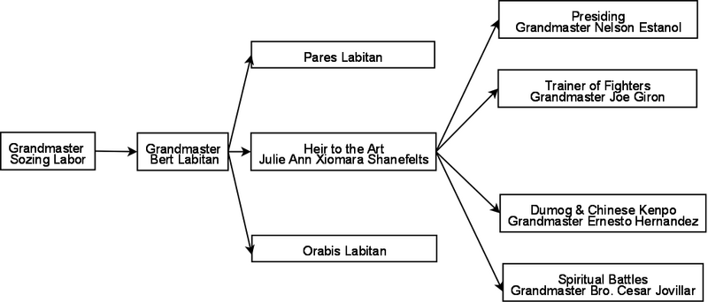
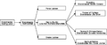

File:Lineage2.png
Jump to navigation


Size of this preview: 800 × 342 pixels. Other resolutions: 320 × 137 pixels | 1,018 × 435 pixels.


Original file (1,018 × 435 pixels, file size: 34 KB, MIME type: image/png)
File history
Click on a date/time to view the file as it appeared at that time.
| Date/Time | Thumbnail | Dimensions | User | Comment | |
|---|---|---|---|---|---|
| current | 21:11, 29 April 2022 |  | 1,018 × 435 (34 KB) | Beknar (talk | contribs) |
You cannot overwrite this file.
File usage
There are no pages that use this file.